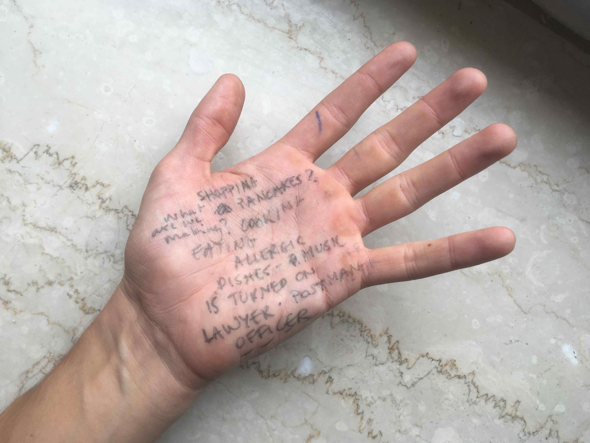
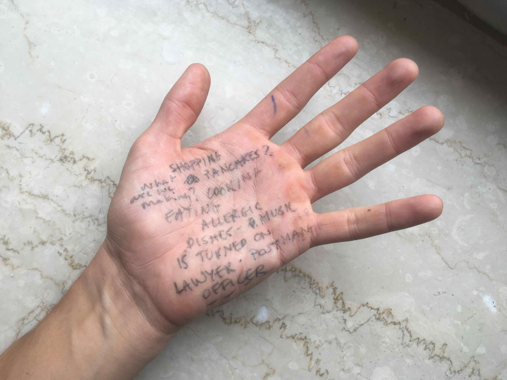

Session 4 - I am developing a bond with the participants. The routine of having 1.5h time slots with 7 individuals each week begins to wear in.
Rest
I notice too how the …

Session 4 - I am developing a bond with the participants. The routine of having 1.5h time slots with 7 individuals each week begins to wear in.
I notice too how the …

After meeting everyone, I had a lot more information to work with. It became clear that there will be as many different processes as there are participants, although I could recycle and distribute elements that I’ve tried in one session to another. Just as I consequently keep the body …

With the participants coming for their sessions, I had to think of a way to capture those moments. And ideally in an interesting way. At the very first meeting, I had an audio recorder laying on the table, but I never dared to ask if it was okay to record …

This item covers the preparation of the first session, how it went with the individual participants and some first reflections. The idea of meeting the participants for the first time felt like getting ready for the first day of school. But then, I was the one welcoming them into my …
Once the individual appointments were made, Open Expression Support could begin. Now it was up to me to prepare the first session and think of a general method, or rather a pedagogical approach to apply throughout the process. In this post, I want to share my thoughts and ideas on …
There were 8 people that contacted me via email, sharing their interest in joining OES or 'Offene Ausdrucksberatung'. Although I planned to meet all of them, one man dropped out shortly after the first contact due to a newly acquired responsibility. Which leaves 7 of them, 2 men and 5 …

How to invite members of the public to come and join Open Expression Support?
After hanging the first version of the invite on over 35 doors in the streets surrounding the school (orange in the picture), I had no idea whether it would address people at all. Not having any …
The first attempt to invite members of the public (that I don't know and have no connection to) to join OES has been executed! And failed presumably. With the scope being too small and undirect, it seemed to be a shot in the dark. Thus, let's up the game and …

The aim of OES (or Offene Ausdrucksberatung) is to provide space and time for those who would usually not come into contact with creative or artistic institutions, to jointly engage in an experience of expression and to reach a creative mode.
Well, in order for the experimental project to take …